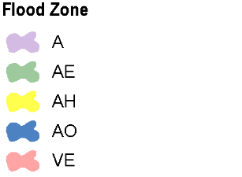
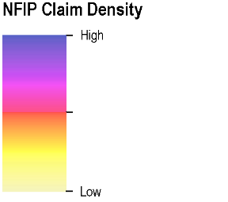
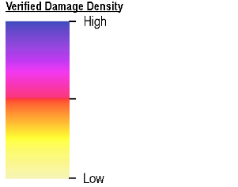
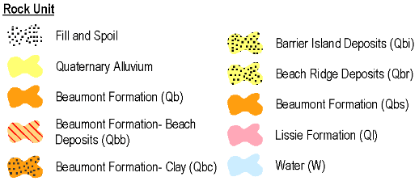
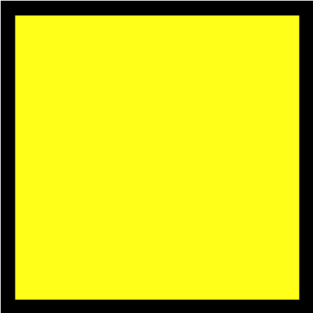
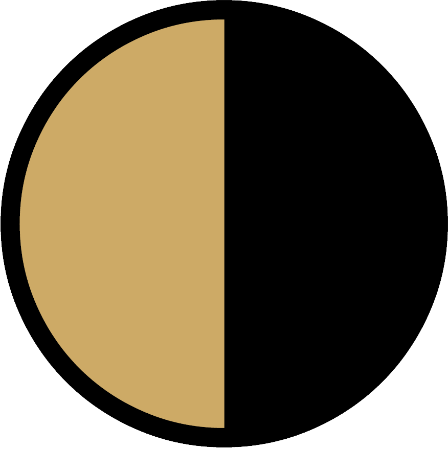

Watersheds
A watershed is an area or ridge of land that separates waters flowing to different rivers, basins, or seas.
Source: USGS

Special Flood Hazard Area (SFHA)
A Special Flood Hazard Area (SFHA) is an area identified by the United States Federal Emergency Management Agency (FEMA) as an area with a special flood or mudflow, and/or flood related erosion hazard, as shown on a flood hazard boundary map or flood insurance rate map.
Source: FEMA Flood Map Service Center

Harvey Flood Extent
This is a preliminary product, and is subject to updates as new data becomes available. This flood inundation product is derived from a wide range of federal, state, local, and private sector resources. High water marks were provided from the United States Geological Survey (USGS), Harris County Flood Control District (USGS), Federal Contractors, and FEMA's Recovery Division to compile a collaborative tapestry of known depth found throughout the impacted areas.
Source: Hurricane Harvey Mitigation Portfolio

Concentration of National Flood Insurance Program (NFIP) claims
This layer uses a color gradient to show the concentration of National Flood Insurance Program (NFIP) claims within the watershed.
Concentration of IA-Real Property FEMA Verified Loss claims
This layer uses a color gradient to show the concentration of IA-Real Property FEMA Verified Loss claims.
NOAA Remote Sensing for Hurricane Harvey
This imagery was acquired by the NOAA Remote Sensing Division to support NOAA homeland security and emergency response requirements. In addition, it will be used for ongoing research efforts for testing and developing standards for airborne digital imagery.
Source: Emergency Response Imagery | National Geodetic Survey
Geology and Soil Series
Flooding is the temporary inundation of an area caused by overflowing streams, by runoff from adjacent slopes, or by tides. Water standing for short periods after rainfall or snowmelt is not considered flooding, and water standing in swamps and marshes is considered ponding rather than flooding.
Frequency is expressed as none, very rare, rare, occasional, frequent, and very frequent.
Source: Flooding Frequency Class - NRCS - USDA
Drainage Class
Drainage class (natural)" refers to the frequency and duration of wet periods in conditions similar to those under which the soil formed. Alterations of the water regime by human activities, either through drainage or irrigation, are not a consideration unless they have significantly changed the morphology of the soil. Seven classes of natural soil drainage are recognized-excessively drained, somewhat excessively drained, well drained, moderately well drained, somewhat poorly drained, poorly drained, and very poorly drained.
Source: Drainage Class - NRCS - USDA
Hydrologic Soil Groups
Hydrologic soil groups are based on estimates of runoff potential. Soils are assigned to one of four groups according to the rate of water infiltration when the soils are not protected by vegetation, are thoroughly wet, and receive precipitation from long-duration storms.
Source: USDA | Hydrologic Soil Groups
Hydric Soil Rating
A hydric soil is a soil that formed under conditions of saturation, flooding, or ponding long enough during the growing season to develop anaerobic conditions in the upper part. Hydric soils along with hydrophytic vegetation and wetland hydrology are used to define wetlands.
Source: Natural Resources Conservation Service Soils
Geology
Source: USGS | Texas Geology

Population (Night)
ORNL’s LandScan™ is a community standard for global population distribution data. At approximately 1 km (30″ X 30″) spatial resolution, it represents an ambient population (average over 24 hours) distribution. The database is refreshed annually and released to the broader user community around October.
Source: Oak Ridge National Laboratory
Social Vulnerability Index (SoVI)
The Social Vulnerability Index (SoVI) describes a community’s resilience to adverse impacts such as natural or human-caused disasters. Reducing SoVI decreases human suffering and economic loss.
Source: SoVI®
Land Cover
he Multi-Resolution Land Characteristics (MRLC) consortium is a group of federal agencies who coordinate and generate consistent and relevant land cover information at the national scale for a wide variety of environmental, land management, and modeling applications.
Source: National Land Cover Database 2011
There are 16 critical infrastructure sectors whose assets, systems, and networks, whether physical or virtual, are considered so vital to the United States that their incapacitation or destruction would have a debilitating effect on security, national economic security, national public health or safety, or any combination thereof. Presidential Policy Directive 21 (PPD-21): Critical Infrastructure Security and Resilience advances a national policy to strengthen and maintain secure, functioning, and resilient critical infrastructure. This directive supersedes Homeland Security Presidential Directive 7.
Source: Homeland Infrastructure Foundation-Level Data (HIFLD)
Energy Sector
Chemical Sector
Emergency Service Sector
Transportation Sector
Government Facilities Sector
Communications Sector
Water and Wastewater Systems Sector
